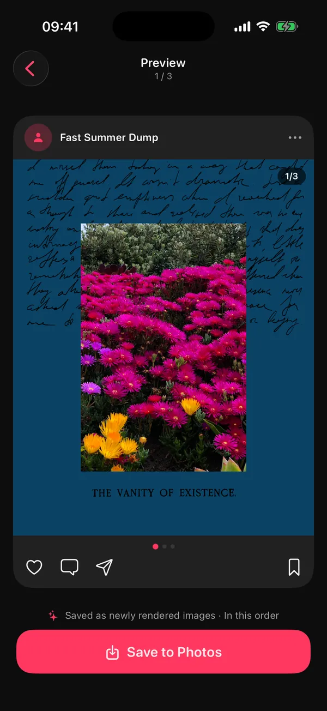

Kaydırmalı post (İngilizcesiyle “carousel”), bir tatili, bir doğum gününü ya da bir ayın özetini tek gönderide paylaşmanı sağlar. Atması kolay; düzgün atması ise birkaç küçük kurala bağlı.
Bu rehber 2026'daki güncel sınırı, ölçüleri, kaliteyi korumanın yollarını ve sırayı karıştırmadan paylaşmanın en kısa yolunu anlatıyor.
Instagram kaydırmalı post nedir?
Kaydırmalı post, tek bir gönderide birden fazla fotoğraf ya da videonun yan yana dizildiği ve takipçinin parmağıyla kaydırarak gezdiği paylaşımdır. Photo dump'lar da bu formatla paylaşılır.
Akışta yalnızca ilk kare görünür; altındaki küçük noktalar devamı olduğunu söyler. Yani ilk kare hem kapak hem de “kaydır” davetiyesidir.
Instagram kaydırmalı post nasıl atılır? Adım adım
Kısaca: + → Gönderi → çoklu seçim → kareleri sırayla işaretle → oranı ayarla → açıklama → Paylaş. Kareler, onlara dokunduğun sırayla yayınlanır.
- Yeni gönderi aç. Instagram'ın altındaki + simgesine dokun ve Gönderi'yi seç.
- Çoklu seçimi aç. Üst üste binmiş kareler simgesine dokun; artık birden fazla öğe seçebilirsin.
- Albümü değiştir. Üstteki albüm adına dokunup hazırladığın albümü seç; tüm galeride kaybolma.
- Sırayla işaretle. Kareleri görünmesini istediğin sırayla seç. Köşede beliren numaralara bak: 1 numara kapaktır.
- Oranı ilk karede ayarla. Seçtiğin oran tüm karelere uygulanır. Dikey (4:5 ya da 3:4) akışta en çok yer kaplar.
- Filtreyi abartma. Her kareye ayrı filtre, özellikle birleşik postlarda, birleşim yerinde renk farkı yaratır.
- Açıklamayı yaz ve paylaş. Kısa tut: bir tarih, bir yer, bir espri. Dump'lar uzun paragraf sevmez.
Instagram arayüzü zaman zaman değişiyor; bir simge başka yerdeyse adımların mantığı aynı kalır.
Kaydırmalı post sınırı: kaç fotoğraf eklenebilir?
Bir kaydırmalı posta en az 2, en fazla 20 fotoğraf ya da video koyabilirsin; ikisini aynı postta karıştırmak serbest. Sınır Ağustos 2024'te 10'dan 20'ye çıktı.
| Kural | Değer |
|---|---|
| En fazla kare | 20 fotoğraf ya da video (TechCrunch, 8 Ağustos 2024) |
| En az kare | 2 (tek kare normal gönderi olur) |
| Fotoğraf ve video | Aynı postta karışık olabilir |
| Oran | İlk kare belirler, tüm karelere uygulanır |
| En iyi dikey ölçü | 1080 × 1350 (4:5) ya da 1080 × 1440 (3:4) |
20 bir tavan, hedef değil. Çoğu photo dump için 8–12 kare yeter; nedenini photo dump rehberinde anlattık. Hâlâ “en fazla 10” diyen kaynaklara rastlarsan, 2024 öncesinden kalmadır.
Instagram kaydırmalı post ölçüleri nelerdir?
Dikey için 1080 × 1350 piksel (4:5) ya da 1080 × 1440 piksel (3:4), kare için 1080 × 1080 (1:1), yatay için 1080 × 566 (1,91:1). Hangisini seçersen seç, ilk kare tüm postun oranını belirler.
| Oran | Ölçü (piksel) | Ne zaman? |
|---|---|---|
| 4:5 dikey | 1080 × 1350 | Tasarımlı kareler için en güvenli klasik dikey |
| 3:4 dikey | 1080 × 1440 | iPhone'un dikey fotoğraflarıyla aynı oran; Mayıs 2025'ten beri destekleniyor |
| 1:1 kare | 1080 × 1080 | Izgaralar, kolajlar, metin ağırlıklı kareler |
| 1,91:1 yatay | 1080 × 566 | Geniş manzaralar; akışta küçük kalır |
İlk kare neden bu kadar önemli?
Instagram bir kaydırmalı postta tek bir oran kullanır ve o oranı ilk kareden alır. Kapağın kare, ikinci fotoğrafın dikeyse ikinci fotoğrafın üstü ve altı kesilir. Instagram bunu ayrıca söylemez; o yüzden kapağın oranını bilerek seç.
4:5 mi, 3:4 mü?
İkisi de olur. Instagram 3:4 desteğini Mayıs 2025'te ekledi (9to5Mac, 29 Mayıs 2025); bundan birkaç ay önce de profil ızgarası kareden daha uzun dikdörtgenlere geçmişti (Business Today, 21 Ocak 2025). Galeriden olduğu gibi gelen iPhone fotoğraflarıysa 3:4 fotoğrafın tamamını kırpmadan gösterir. Tasarımlı kolaj sayfaları karıştırıyorsan 4:5 hâlâ en güvenli seçim.
DUMP'ta oran nasıl seçilir?
Swipe Carousel modunda oranla uğraşmazsın: orijinal fotoğrafların olduğu gibi albüme girer, kırpmayı Instagram'da ilk karede seçersin. Kolaj Sayfası'nda ise Oran menüsünde Dikey (4:5), Kare (1:1), Yatay (1,91:1) ve Hikayeler (9:16) hazır gelir. 3:4 için hazır bir düğme yok; Diğer'e dokunup genişliğe 3, yüksekliğe 4 yazarak ayarlayabilirsin.
Kaydırmalı postta kalite neden düşer, nasıl önlenir?
Çünkü Instagram yüklediğin her fotoğrafı yeniden boyutlandırıp sıkıştırır ve bunu kapatamazsın. Senin elinde olan, bu işlemin bir kez mi yoksa iki kez mi yaşanacağı.
- Yüksek kaliteli yüklemeyi aç: Instagram'da Ayarlar ve gizlilik → Veri kullanımı ve medya kalitesi bölümünde, yüklemeleri en yüksek kalitede yapan seçeneği aç.
- İki kez sıkıştırma: fotoğrafı paylaşmadan önce yeniden kaydeden her uygulama, Instagram'dan önce kaliteden bir parça yer.
- Ekran görüntüsü paylaşma: bir fotoğrafın ekran görüntüsü, ekran çözünürlüğünde yeniden çekilmiş bir kopyadır ve belli olur.
- Oranı baştan doğru kur: kolaj ve tasarımlarda doğru oranla çalış ki Instagram kırpmasın.
DUMP'ın Swipe Carousel modu bu yüzden fotoğrafına hiç dokunmaz: orijinal fotoğraf ve videolarını yeniden sıkıştırmadan, boyutlandırmadan ve kopyalamadan yeni bir albüme senin sıranla ekler. Tek istisna tarih damgası eklediğin fotoğraflar; onlar yüksek kaliteli JPEG olarak yeniden işlenir. Kolaj, ızgara ve şablon sayfaları ise uzun kenarı 2160 piksel, %98 kaliteli JPEG olarak kaydedilir. Böylece Instagram'ın sıkıştırması tek seferlik olur.
Kaydırmalı postta sıra nasıl ayarlanır?
Instagram kareleri galerideki sırayla değil, dokunduğun sırayla paylaşır ve sırayı küçük küçük kareler üzerinden ayarlatır. Sırayı Instagram'a girmeden önce bir albümde kurarsan yanlış gitme ihtimali neredeyse kalmaz.
Seçim ekranındaki minik kareler arasında 12 fotoğrafı doğru sırayla işaretlemek, otobüste ayakta giderken yapılacak iş değil. İki pratik yol:
- Hafta boyunca kalp at. Beğendiğin kareleri favorilere ekle; sonra aylarca galeri kaydırmak yerine Favoriler albümünden seç.
- Sırayı Instagram'ın dışında kur. Kareleri başka bir uygulamada sırala, ayrı bir albüme kaydet ve Instagram'da o albümden seç.
DUMP ikinci yolu kendiliğinden yapar. Fotoğraflara Kaydet'e dokunduğunda projenin adını taşıyan yeni bir albüm açılır ve kareler paylaşım sırasıyla eklenir. Ardından Instagram'da paylaş'a dokun: DUMP açıklamanı kopyalar ve üç adımı gösterir. Instagram karusel paylaşımını yalnızca profesyonel hesaplar için onaylı planlama araçlarına API üzerinden açtığından ve DUMP'ın hesabı ya da sunucusu olmadığından son dokunuşlar senin: albümü seç, çoklu seçimi aç, kareleri sırayla işaretle, açıklamayı yapıştır.


Paylaştıktan sonra kaydırmalı post düzenlenir mi? Tek fotoğraf silme
Kısmen. Paylaşılmış bir kaydırmalı postta açıklamayı ve etiketleri düzenleyebilir, tek bir kareyi silebilirsin, Mart 2026'dan beri de karelerin sırasını değiştirebilirsin (Social Media Today, 23 Mart 2026); ama yeni kare ekleyemezsin ve yalnızca iki karelik bir posttan kare silinemez (Hootsuite, 20 Ekim 2022).
- Düzenlemeyi aç. Gönderinin sağ üstündeki üç noktaya dokun ve Düzenle'yi seç.
- Kareyi bul. Silmek istediğin kareye kaydır.
- Çöp kutusuna dokun. Karenin sol üstündeki çöp kutusu simgesine dokun ve silmeyi onayla.
- Kaydet. Bitti'ye dokun; post kalan karelerle güncellenir.
Silinen kare hemen kaybolmaz: 30 gün boyunca profil menüsündeki son silinenler listesinde durur ve oradan geri yüklenebilir.
Unutulan bir kareyi ise sonradan ekleyemezsin. Paylaşmadan önce sayıyı ve sırayı bir kez daha kontrol etmek, postu silip baştan atmaktan çok daha kısa sürer.
En sık yapılan kaydırmalı post hataları neler?
En çok emek yiyen beş hata: zayıf bir ilk kare, karışık oranlar, gereğinden fazla kare, yanlış sırayla seçmek ve ekran görüntüsü ya da iki kez sıkıştırılmış dosya paylaşmak.
| Hata | Ne görürsün? | Çözüm |
|---|---|---|
| Zayıf ilk kare | Kimse kaydırmaz | En net, tek özneli kareyi kapak yap |
| Karışık oranlar | Sonraki karelerin üstü altı kesilir | İlk karenin oranını bilerek seç |
| “Olabiliyor” diye 20 kare | İnsanlar yarıda bırakır | 8–12 karede dur |
| Yanlış sırayla seçmek | Hikâye karışır | Sırayı önceden bir albümde kur |
| Ekran görüntüsü ya da çift sıkıştırma | Bulanık, “çamurlu” kareler | Orijinal dosyayı paylaş |
Sık sorulan sorular
Instagram kaydırmalı postta en fazla kaç fotoğraf olur?
20 fotoğraf ya da video; Instagram sınırı Ağustos 2024'te 10'dan 20'ye çıkardı. En az 2 kare gerekir. DUMP'ın ücretsiz planı 10, Premium 20 öğeye kadar dump hazırlar.
Kaydırmalı postta fotoğraflar neden kırpılıyor?
Çünkü Instagram tüm karelere ilk karenin oranını uygular. Kapak kareyse dikey fotoğrafların üstü ve altı kesilir. Kapağın oranını (genelde 4:5 ya da 3:4) bilerek seç.
Paylaştıktan sonra kaydırmalı posttan tek fotoğraf silinir mi?
Evet, post en az üç kareliyse. Üç nokta → Düzenle → silmek istediğin kare → çöp kutusu → Bitti. Silinen kare 30 gün içinde son silinenler listesinden geri yüklenebilir. İki karelik bir posttan kare silinemez.
Kaydırmalı postta fotoğrafların sırası nasıl değiştirilir?
En güvenlisi paylaşmadan önce: seçim ekranında kareler dokunduğun sırayla numaralanır; yanlışsa düzenleme ekranında kareyi basılı tutup sürükle. Mart 2026'dan beri paylaşılmış bir postta da sıra değişebiliyor: Düzenle'yi aç, bir kareyi basılı tutup sürükle. Sırayı önceden bir albümde kurmak bu adımı kolaylaştırır; DUMP bunu kaydederken kendiliğinden yapar.
DUMP doğrudan Instagram'da paylaşabilir mi?
Kaydırmalı postu doğrudan paylaşamaz: Instagram karusel paylaşımını yalnızca profesyonel hesaplar için onaylı planlama araçlarına API üzerinden açıyor, DUMP'ın ise hesabı ya da sunucusu yok. DUMP kareleri paylaşım sırasıyla bir albüme kaydeder, açıklamanı kopyalar ve adımları gösterir; albümü seçip paylaşan sensin. Kapak karesini ise “Kapağı Story'de paylaş” ile Story'ye gönderebilirsin.
Sıradaki kaydırmalı postun, sırası hazır bir albüm olsun
DUMP en iyi karelerini iPhone'unda seçer ya da senin seçtiklerini sıralar, sonra orijinal kalitede ve paylaşım sırasıyla yeni bir albüme kaydeder. Ücretsiz, hesap yok, internetsiz çalışır.
 Bilgisayarda mısın?iPhone kameranla tara
Bilgisayarda mısın?iPhone kameranla tara
Ücretsiz · iPhone ve iPad · iOS 18.6+ · Hesap yok · İnternetsiz çalışır · Uygulama Türkçe
Kaynaklar
- TechCrunch, 8 Ağustos 2024: Instagram kaydırmalı post sınırını 10'dan 20 fotoğraf ve videoya çıkardı (İngilizce).
- 9to5Mac, 29 Mayıs 2025: Instagram tekli postlarda ve kaydırmalı postlarda 3:4 fotoğrafları destekliyor (İngilizce).
- Business Today, 21 Ocak 2025: Instagram profil ızgarasının kareden dikdörtgen önizlemelere geçişi (İngilizce).
- Social Media Today, 23 Mart 2026: Instagram, paylaşılmış bir kaydırmalı postta karelerin sırasını değiştirmeye izin veriyor; yeni kare eklemek için yine yeni post gerekiyor (İngilizce).
- Hootsuite, 20 Ekim 2022: kaydırmalı posttan tek fotoğraf silme adımları, iki karelik post sınırlaması ve 30 günlük geri yükleme (İngilizce).
- Instagram Yardım Merkezi, “Share multiple photos”, 16 Ekim 2026'da kontrol edildi: sırayı değiştirmek için kareyi basılı tutup sürükle; karenin kadraja nasıl oturacağını ayarlamak için ona dokun (İngilizce).
- Instagram Yardım Merkezi, “Share multiple photos”, 16 Ekim 2026'da kontrol edildi: sırayı değiştirmek için kareyi basılı tutup sürükle; karenin kadraja nasıl oturacağını ayarlamak için ona dokun (İngilizce).
- DUMP'ın dışa aktarma ve Instagram paylaşım davranışı, 15 Ekim 2026'da App Store'daki sürüm olan DUMP 2.0'ın kaynak koduyla karşılaştırıldı.